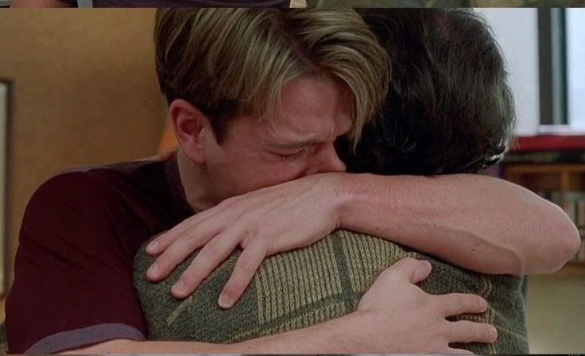

Midnight In Paris
Midnight in Paris follows a nostalgic writer, Gil, who mysteriously travels back to 1920s Paris each night. There, he meets literary and artistic legends, discovering insights about love, art, and living in the present.
Midnight in Paris follows a nostalgic writer, Gil, who mysteriously travels back to 1920s Paris each night. There, he meets literary and artistic legends, discovering insights about love, art, and living in the present.
Before Sunset follows Jesse and Céline reuniting in Paris nine years after their brief romance in Vienna. As they walk and talk, they reflect on love, life, and the choices they've made.

An unorthodox English teacher inspires his students to seize the day and embrace poetry. His teachings spark rebellion and tragedy in a strict boarding school.
An NRI NASA scientist returns to India and reconnects with his roots. Moved by rural hardships, he decides to stay and bring positive change to his homeland.

A police officer grapples with grief while investigating a mysterious death linked to a supernatural twist. The case forces him to confront his own emotional turmoil.
A Jewish pianist in Nazi-occupied Warsaw struggles to survive the Holocaust. Through music and resilience, he endures unimaginable hardships in isolation.

Multiple interwoven stories of crime and redemption unfold in a gritty, stylish Los Angeles underworld. The film is known for its nonlinear narrative and sharp dialogue
The aging patriarch of a crime family passes control to his reluctant son. The saga explores power, loyalty, and the cost of becoming the new Godfather.

A group of carefree college students awaken to activism after portraying Indian freedom fighters in a documentary. Their lives change forever as they confront modern-day corruption and injustice.
A mentally unstable veteran becomes a taxi driver in New York City, descending into violence as he attempts to save a young girl. The film explores alienation and the psyche of a man unraveling.


A janitor at MIT, Will Hunting, is a mathematical genius struggling with his past. With the help of a therapist, he confronts his trauma and begins to realize his potential.
A young drummer pushes himself to the limit under a ruthless music instructor. The intense pursuit of greatness leads to both brilliance and breakdown.